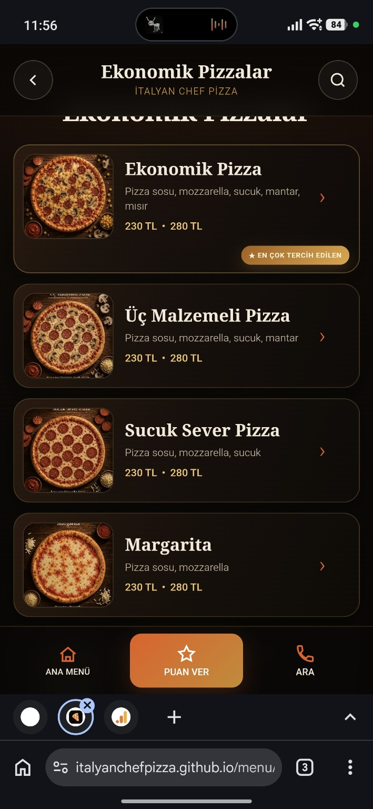

01
KURARIZ
Çayırova · Kocaeli
Marka, web ve ölçüm sistemleri. Sade görünür, ciddi çalışır.
İLK UYGULAMALI SİSTEM PROJEMİZ
01 / ÇALIŞMA
ITALIAN CHEF PIZZA
Fiziksel menü deneyimini, müşteriyi karar vermeye yönlendiren ve davranışı ölçen bir dijital sisteme çevirdik.
Menü ürün gösteriyordu. Kampanyayı açıklamıyor, ilgiyi ölçmüyor ve satışı yönlendirmiyordu.
Mobil öncelikli menü, akıllı kategoriler, kampanya alanları ve GA4 davranış ölçümü.

02 / HİZMETLER
İŞ MODELİMİZ
KURARIZ
BÜYÜTÜRÜZ
YÖNETİRİZ
03 / YÖNTEM
GEREKSİZ KALABALIK YOK
04 / PAKETLER
EYLÜL PROJE FİYATLARI · İLK 5 İŞLETME
Her üst paket, önceki paketin tüm özelliklerini içerir.
BAŞLANGIÇ
İŞLETME
TAM SİSTEM
Kampanya ilk 5 proje ile sınırlıdır. Proje kapsamına göre ek hizmetler ayrıca fiyatlandırılır.
BİR FİKRİNİZ Mİ VAR?
İlk görüşme kısa, net ve ücretsiz. İşletmenizi anlatın; en mantıklı başlangıcı birlikte belirleyelim.
hello@parabellum.works